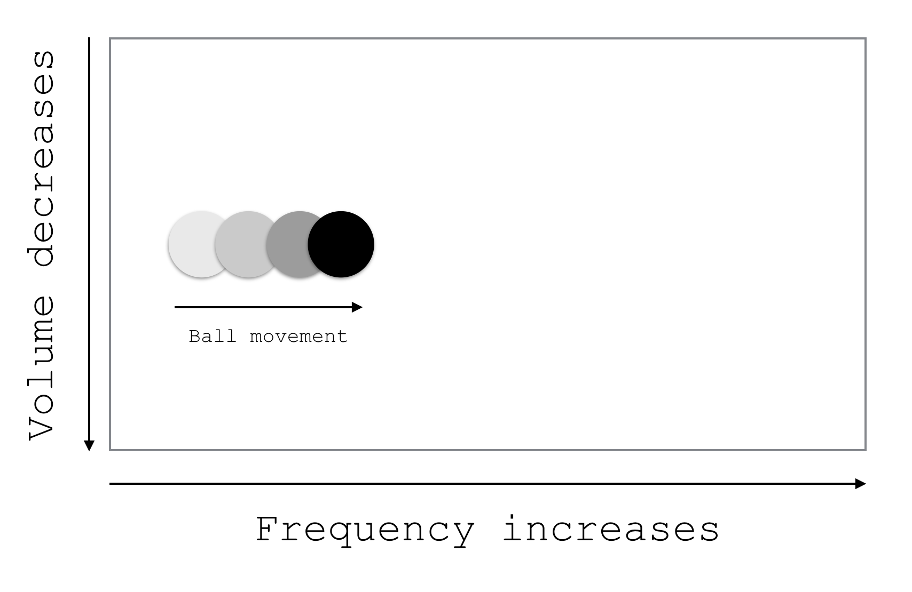
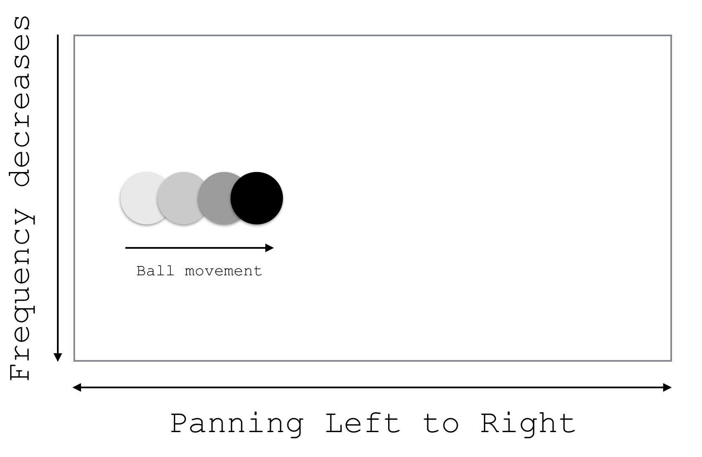

Since the content of the canvas is inaccessible, it is important to ensure that the content can be explained in some way - especially in the case of movement/ To do this, we add a tonal output to indicate movement.
In this case, the movement from left to right is indicated by an increase frequency from 65Hz to 1760Hz. Movement from up to down in indicated by a derease in volume.
Click here to see method 1 in action In this case, we take advantage of stereo outputs. Movement from left to right is indicated by panning the sound from the left to the right earphone/headphone. Also, since a lot of cultural references have higher frequency on top and lower in the bottom (such as bombs dropping in the road runner show!), up to down movement is indicated by a decrease in frequency from 1760Hz to 65Hz.
Click here to see method 2 in action The implementation to get the data for the p5 objects is done using an interceptor/monkey patch. The patch gets the position of the object from the function call and compares it with previous position. If there is a change in position, then the necessary mapping is done to produce the sounds. As of now, this implementation exists only for one moving object.
Source code